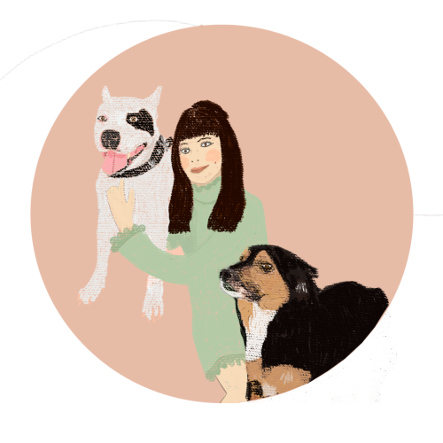

The artist, originally from Maceió-AL, Brazil, holds a degree in Architecture. She has previously worked on designing houses, creating clothing collections and managing a restaurant. In recent years, she has decided to devote herself to painting, experimenting with different techniques and mediums. Currently, she has been blending her artistic production by exploring deeper and more melancholic themes while also creating animations with lighter and more amusing subjects.